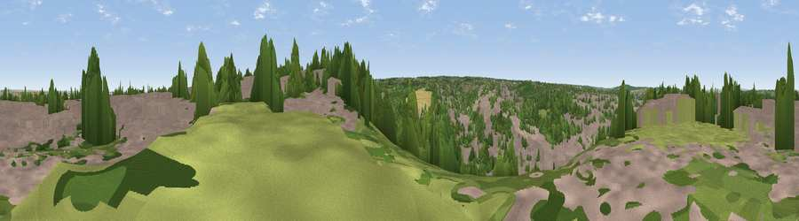

Viewpoint near Hale
#29177 in England · top 43% of its area beats it · near HaleWhere it is
The exact computed spot (TQ 77775 66725). Click the marker for map links.
The view, rendered

A 360° render of this exact spot computed from the terrain model, tree cover and land cover — summer colours, afternoon light, calibrated against photographs of famous viewpoints. Real trees, hedges and buildings will differ in detail.
The panorama
Grey silhouette: terrain skyline in each direction (720 bearings, Earth curvature and refraction included). Dashed green: skyline with trees (+15 m) and buildings (+8 m) as obstacles. Blue strip: how far the ground is visible on each bearing.
Where the view opens
Wedge length = distance to the farthest visible ground on that bearing (vegetation-aware). Rings at 10, 25 and 50 km.
What fills the view
48% built-up · 30% woodland · 14% grassland · 4% cropland · 3% water
Angular shares of the visible panorama (visual magnitude), not map area. Landscape diversity 0.54 (0–1 Shannon).
Key numbers
More beautiful places nearby
The staircase of upgrades: each row has a higher view potential than everything closer. Driving times are estimates from straight-line distance, calibrated against real road routing — check an actual route before setting out.
| Place | Direction | Drive | Score |
|---|---|---|---|
| Viewpoint near Borstal | W · 4 km | ~10 min | 49.4 |
| Viewpoint near Bluebell Hill | SSW · 6 km | ~12 min | 63.3 |
| Bluebell Hill | SW · 6 km | ~12 min | 64.8 |
| Viewpoint near Boxley | SSW · 7 km | ~14 min | 68.6 |
| Viewpoint near Shipbourne | WSW · 25 km | ~40 min | 69.1 |
| Viewpoint near Westwell | SE · 28 km | ~44 min | 72.2 |
| Viewpoint near Lympne | SE · 45 km | ~65 min | 72.6 |
| Tolsford Hill | SE · 47 km | ~68 min | 77.9 |
51.37175, 0.55269 · source: screening · position refined by local search. Computed location — check access rights before visiting.